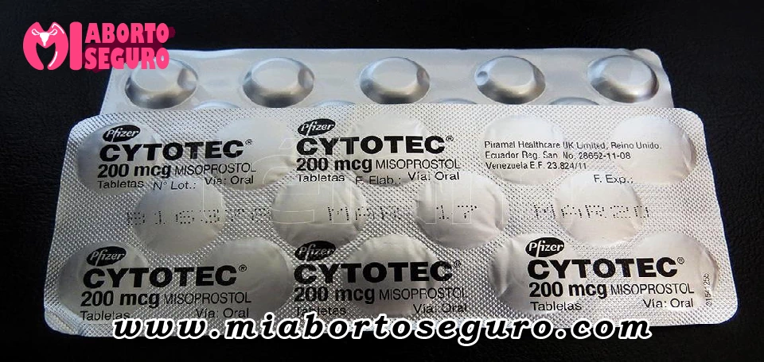

Las pastillas para abortar son medicamentos que interrumpen el embarazo en su etapa temprana. Generalmente se pueden utilizar hasta 12 semanas después del primer día del último periodo menstrual. Mientras antes sepa la mujer que está embarazada y más rápido tome la decisión, más eficaz será el tratamiento.
Este punto es el más importante de todos, ya que si la mujer tiene más de 12 semanas de embarazo el uso de estos medicamentos puede acarrear complicaciones médicas.
Si la mujer tiene más de 15 semanas de embarazo es necesario que se realice el procedimiento en un centro de salud o estar muy cerca de uno de ellos, para una pronta reacción ante una posible complicación.
Si por otra parte hablamos de más de 20 semanas de gestación, los riesgos serían aún mayores.
Las píldoras causan contracciones en el útero en cualquier etapa del embarazo, pero los riesgos son más altos a partir de la semana 12. No es recomendable usarlas posteriormente a la semana 15, ya que el riesgo de hemorragia, así como otras complicaciones, aumenta exponencialmente.
A partir de las 12 semanas de gestación, para practicar un aborto es recomendable recurrir a otros métodos, como aspiración o legrado. Cabe destacar que éstos deben ser realizados por un profesional médico en un centro de salud, ya sea público o privado.
Aunque en la gran mayoría de los casos el uso de estos medicamentos no conlleva ningún peligro, cabe recordar que en cualquier procedimiento médico siempre existe un riesgo, por mínimo que sea.
Según los profesionales, si el embarazo se encuentra en su etapa inicial, el uso de estas pastillas resulta uno de los métodos más seguros para la mujer. Un aborto médico realizado con este tipo de píldoras tiene una tasa de éxito de entre el 80 al 90 por ciento.
No obstante, algunos de los riesgos que se presentan son:
Generalmente, estas complicaciones son simples de resolver con otros medicamentos o tratamientos. En casos sumamente raros, las complicaciones más graves pueden resultar fatales, pero no queremos causar alarma, el riesgo de muerte por un aborto inducido es menor que el riesgo de un parto o embarazo a término.
Abortar puede ser una decisión difícil para muchas mujeres, por eso recomendamos discutirla con un profesional de la salud, pero en caso de no poder hacerlo, es importante acudir a amigos, parientes, pero nunca tomar la decisión sola.
Sea cual fuere la opción que tome, queremos hacer hincapié en la importancia de acudir a un especialista, evitando a toda costa tratar de producirlo introduciendo objetos filosos o sucios dentro del útero o golpeándose el vientre.
Esta práctica es muy peligrosa y bajo ningún concepto debe ser realizada, debido a que existe un riesgo elevado de sufrir lesiones internas en el útero. A su vez, este tipo de prácticas también puede producir infecciones, grandes hemorragias e incluso la muerte.
En primer lugar, su facilidad y rapidez. Las mujeres pueden iniciar el tratamiento apenas se enteren de su embarazo.
Es un tratamiento que puede hacerse desde casa, por lo que es una ventaja para aquellas mujeres que desean mantener esta decisión en privado.
No es necesario el uso de anestesia, aunque puede usarse un analgésico como el ibuprofeno para los dolores. Si tras abortar la mujer siente dolores intensos, debe evitar la toma de analgésicos porque estos contrarrestan el efecto de las píldoras abortivas.
Algunas mujeres sienten este método resulta más seguro, ya que perciben tener el control de lo que sucede, a diferencia de un aborto por succión o el legrado.
Es común ver cómo las mujeres que han usado este método lo recomiendan a sus amigas y conocidas como la mejor elección.
Las pastillas abortivas son un método no invasivo para interrumpir un embarazo temprano. Estas pastillas están diseñadas para bloquear la hormona progesterona, la cual es esencial para el mantenimiento del embarazo. Sin esta hormona, el revestimiento del útero se desprende y el embrión se desprende. Las pastillas abortivas más comunes contienen mifepristona y misoprostol.
En Perú, las pastillas abortivas solo se pueden obtener con receta médica y en farmacias autorizadas. También es posible obtener pastillas abortivas a través de vendedores en línea, pero es importante tener cuidado y verificar la autenticidad de los medicamentos.
En Perú, las pastillas abortivas más comunes son mifepristona y misoprostol. Estos medicamentos están disponibles en las farmacias autorizadas bajo prescripción médica. Es importante seguir las instrucciones médicas y tomar los medicamentos solo después de una evaluación médica completa.
El misoprostol se usa comúnmente en combinación con la mifepristona para un aborto seguro y efectivo. El misoprostol se toma varias horas después de la mifepristona y provoca contracciones uterinas que ayudan a expulsar el embrión y el tejido del útero. La dosis recomendada de misoprostol varía según la edad gestacional y la evaluación médica individual. Es importante seguir las instrucciones médicas cuidadosamente y estar en contacto con un profesional de la salud durante todo el proceso.
Los efectos secundarios comunes de las pastillas abortivas incluyen náuseas, vómitos, diarrea, dolor abdominal, fiebre y escalofríos. Estos síntomas suelen desaparecer en un día o dos, pero es importante estar en contacto con un profesional de la salud en caso de cualquier complicación.
Es seguro realizar un aborto en casa con pastillas abortivas siempre y cuando se sigan las instrucciones médicas cuidadosamente y se tenga acceso a atención médica en caso de cualquier complicación. Es importante tener en cuenta que el aborto en casa solo es seguro hasta una cierta edad gestacional, y es necesario tener una evaluación médica completa antes de tomar cualquier medicamento.
La efectividad de las pastillas abortivas depende de varios factores, incluyendo la edad gestacional y la evaluación médica individual. En general, las pastillas abortivas son altamente efectivas cuando se usan correctamente, con una tasa de éxito de alrededor del 95%.
Es importante estar en contacto con un profesional de la salud en caso de cualquier complicación después de tomar las pastillas abortivas. Los síntomas de complicaciones pueden incluir dolor abdominal intenso, fiebre persistente, sangrado abundante y otros síntomas graves. En algunos casos, puede ser necesario recibir tratamiento médico adicional.
Para asegurarse de que las pastillas abortivas compradas en Perú sean auténticas, es importante comprarlas solo en farmacias autorizadas y con receta médica. También se pueden realizar pruebas de autenticidad en línea o a través de laboratorios especializados.
En Perú, el uso de pastillas abortivas solo está permitido en casos específicos, como violación o riesgo para la vida de la madre. Es importante conocer las leyes y regulaciones locales antes de tomar cualquier decisión relacionada con el aborto.
Asesoramiento para un aborto seguro al whatsapp Hacer un consulta